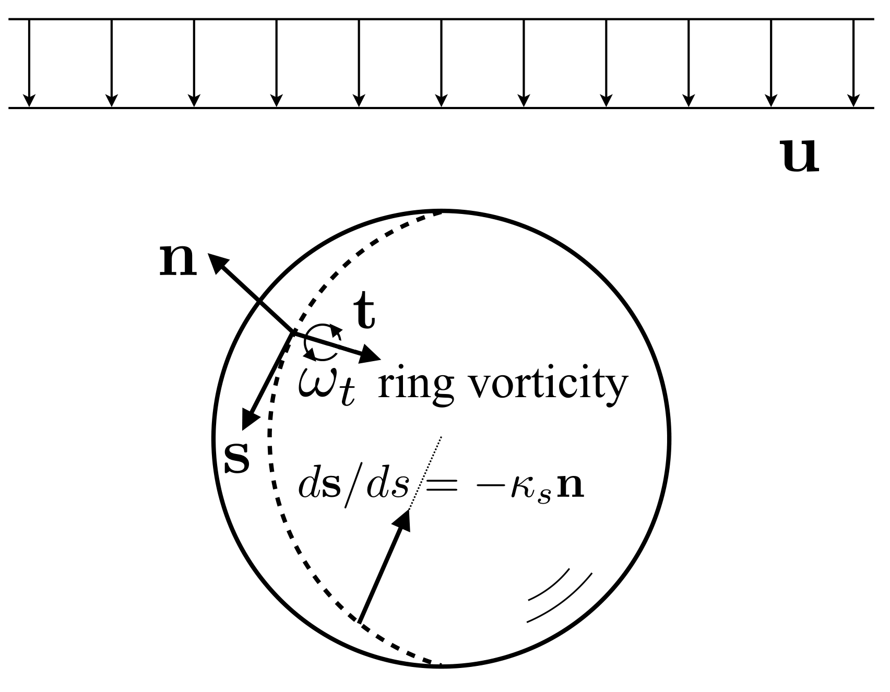

9.2. Drag-enstrophy relation
Summary
Subject: Role of vorticity in drag
Main conclusion: A direct relation between enstrophy and drag is revealed.
Key idea Viscous dissipation is rewritten in terms of vorticity via Bobyleff-Forsythe form.
Reference: Stone [Sto93 ]
The work done by the drag acting on a bubble fixed in a uniform flow \(\mathbf{u}\) balances with the viscous dissipation in the liquid as follows: (Drag acting on a spherical bubble at high Re
(9.33) \[ F_{D} u
= \iiint_{V} 2 \mu e_{ij} e_{ij} dV\]
where \(e_{ij}\) is the rate of strain tensor defined by
(9.34) \[ e_{ij} = \frac{1}{2} \left( \frac{\partial v_{i}}{\partial x_{j}} + \frac{\partial v_{j}}{\partial x_{i}} \right)\]
The Bobyleff-Forsythe formula gives the dissipation function in terms of the enstrophy, i.e.,
(9.35) \[ 2 e_{ij} e_{ij} = \omega_{i} \omega_{i} + 2 \frac{\partial v_{i}}{\partial x_{j}} \frac{\partial v_{j}}{\partial x_{i}}\]
where \(\boldsymbol{\omega}\) is the vorticity defined by
(9.36) \[ \boldsymbol{\omega} = \nabla \times \mathbf{v} \]
The validity of the formula can be easily confirmed by expanding the enstrophy using the identity \(\epsilon_{kij} \epsilon_{kmn}\) . The second term in Eq. (9.35) can be rewritten as
(9.37) \[ \frac{\partial v_{i}}{\partial x_{j}} \frac{\partial v_{j}}{\partial x_{i}}
= \frac{\partial }{\partial x_{j}} \left( v_{i} \frac{\partial v_{j}}{\partial x_{i}} \right) - v_{i} \frac{\partial^{2} v_{j}}{\partial x_{j} \partial x_{i}}
= \frac{\partial }{\partial x_{j}} \left( v_{i} \frac{\partial v_{j}}{\partial x_{i}} \right)\]
where the continuity equation \(\nabla \cdot \mathbf{v} = 0\) was used. Using this expression, the total dissipation can be written as
(9.38) \[\begin{split}\begin{split}
\iiint_{V} 2 \mu e_{ij} e_{ij} dV
&= \mu \iiint_{V} \left\{ \omega_{i} \omega_{i} + 2 \frac{\partial }{\partial x_{j}} \left( v_{i} \frac{\partial v_{j}}{\partial x_{i}} \right) \right\} dV \\
&= \mu \iiint_{V} \omega_{i} \omega_{i} dV + 2 \mu \iiint_{V} \frac{\partial }{\partial x_{j}} \left( v_{i} \frac{\partial v_{j}}{\partial x_{i}} \right) dV
\end{split}\end{split}\]
The divergence theorem transforms the volume integral of the second term in the right-most equation:
(9.39) \[\begin{split}\begin{split}
\iiint_{V} \frac{\partial }{\partial x_{j}} \left( v_{i} \frac{\partial v_{j}}{\partial x_{i}} \right) dV
&= \iint_{S_{\infty}} v_{i} \frac{\partial v_{j}}{\partial x_{i}} n_{j} dS - \iint_{S} v_{i} \frac{\partial v_{j}}{\partial x_{i}} n_{j} dS \\
&= - \iint_{S} v_{i} \frac{\partial v_{j}}{\partial x_{i}} n_{j} dS
\rightarrow - \iint_{S} \mathbf{n} \cdot [ ( \mathbf{v} \cdot \nabla ) \mathbf{v} ] dS
\end{split}\end{split}\]
where \(S\) is the bubble surface, \(\mathbf{n}\) is the unit outward normal to the bubble surface, and the condition, \(\nabla \mathbf{v} \rightarrow 0\) as \(r \rightarrow \infty\) , was used. The drag is thus expressed as
(9.40) \[ F_{D} u
= \mu \iiint_{V} \omega_{i} \omega_{i} dV - 2 \mu \iint_{S} \mathbf{n} \cdot [ ( \mathbf{v} \cdot \nabla ) \mathbf{v} ] dS\]

Fig. 9.1 Spherical bubble in uniform flow
The term, \(\mathbf{n} \cdot [ ( \mathbf{v} \cdot \nabla ) \mathbf{v} ]\) , can be expressed in terms of the surface velocity \(\mathbf{u}_{s}\) as follows. The velocity at the bubble surface can be decomposed into the normal component \(v_{n} \mathbf{n}\) and the tangential component \(v_{s} \mathbf{s}\) , where \(\mathbf{s}\) is the unit tangent to the surface. Since the bubble is motionless, \(v_{n} \mathbf{n} = 0\) . Therefore,
(9.41) \[\begin{split}\begin{split}
\mathbf{n} \cdot [ ( \mathbf{v} \cdot \nabla ) \mathbf{v} ]
&= \mathbf{n} \cdot [ ( v_{s} \mathbf{s} \cdot \nabla ) v_{s} \mathbf{s} ]
= \mathbf{n} \cdot \left( v_{s} \frac{\partial v_{s} \mathbf{s}}{\partial s} \right)
= \mathbf{n} \cdot \left( v_{s}^{2} \frac{\partial \mathbf{s}}{\partial s} \right) + ( \mathbf{n} \cdot \mathbf{s} )\left( v_{s} \frac{\partial v_{s}}{\partial s} \right) \\
&= \mathbf{n} \cdot \left( v_{s}^{2} \frac{\partial \mathbf{s}}{\partial s} \right)
\end{split}\end{split}\]
where \(\mathbf{n} \cdot \mathbf{s} = 0\) was used in the transformation for the right-most equation. The rate of change in \(\mathbf{s}\) along the path of a fluid particle on the surface gives the curvature vector of the path:
(9.42) \[ \frac{\partial \mathbf{s}}{\partial s} = - \kappa_{s} \mathbf{n}\]
where \(\kappa_{s}\) is the curvature of the path and it is defined as positive when the origin of radius of curvature is inside the bubble. The normal component of the surface advection is therefore
(9.43) \[ \mathbf{n} \cdot [ ( \mathbf{v} \cdot \nabla ) \mathbf{v} ]
= - \kappa_{s} v_{s}^{2}\]
Thus,
(9.44) \[ F_{D} u
= \mu \iiint_{V} \omega_{i} \omega_{i} dV + 2 \mu \iint_{S} \kappa_{s} v_{s}^{2} dS\]
The drag coefficient is then obtained as
(9.45) \[ C_{D}
= \frac{F_{D}}{\frac{1}{2} \rho u^{2} \pi a^{2}}
= \frac{2 \mu}{ \pi a^{2} \rho u^{3} } \left\{ \iiint_{V} \omega_{i} \omega_{i} dV + 2 \iint_{S} \kappa_{s} v_{s}^{2} dS \right\}\]
The tangential viscous stress is zero because of the slip boundary condition:
(9.46) \[ s_{i} \tau_{ij} n_{j} = 0~~~~\text{on}~S\]
Substituting \(\tau_{ij} = 2 \mu e_{ij}\) yields
(9.47) \[ s_{i} \left( \frac{\partial v_{i}}{\partial x_{j}} + \frac{\partial v_{j}}{\partial x_{i}} \right) n_{j} = 0~~~~\text{on}~S\]
The first term becomes
(9.48) \[ s_{i} \frac{\partial v_{i}}{\partial x_{j}} n_{j}
= \frac{\partial v_{i} s_{i}}{\partial x_{j}} n_{j} - v_{i} \frac{\partial s_{i}}{\partial x_{j}} n_{j}
= \frac{\partial v_{s}}{\partial n} \]
The second term in the second equation vanishes since \(\partial \mathbf{s} / \partial n = 0\) . The second term in the viscous stress is then
(9.49) \[ s_{i} \frac{\partial v_{j}}{\partial x_{i}} n_{j}
= s_{i} \frac{\partial v_{j} n_{j}}{\partial x_{i}} - v_{j} s_{i} \frac{\partial n_{j}}{\partial x_{i}}
= \frac{\partial v_{n}}{\partial s} - \kappa_{s} v_{s}\]
where we used \(\partial \mathbf{n} / \partial s = \kappa_{s} \mathbf{s}\) . Thus, the boundary condition gives
(9.50) \[ \frac{\partial v_{s}}{\partial n} + \frac{\partial v_{n}}{\partial s} - \kappa_{s} v_{s} = 0\]
However, the bubble shape is fixed, and therefore,
(9.51) \[ \frac{\partial v_{s}}{\partial n} - \kappa_{s} v_{s} = 0\]
Let us take the orthogonal basis \(\mathbf{t}\)
(9.52) \[ \mathbf{t} = \mathbf{n} \times \mathbf{s}\]
The velocity is expressed as
(9.53) \[ \mathbf{v} = v_{s} \mathbf{s} + v_{t} \mathbf{t} + v_{n} \mathbf{n} = v_{s} \mathbf{s}\]
Taking \(rot\) of \(\mathbf{v}\) yields
(9.54) \[ \nabla \times \mathbf{v}
= \nabla \times ( v_{s} \mathbf{s} )
\rightarrow \epsilon_{ijk} \frac{\partial v_{s} s_{k}}{\partial x_{j}}
= v_{s} \epsilon_{ijk} \frac{\partial s_{k}}{\partial x_{j}} + \epsilon_{ijk} s_{k} \frac{\partial v_{s}}{\partial x_{j}}
= v_{s} \epsilon_{ijk} \frac{\partial s_{k}}{\partial x_{j}} - \epsilon_{ikj} s_{k} \frac{\partial v_{s}}{\partial x_{j}}
\rightarrow v_{s} \nabla \times \mathbf{s} - \mathbf{s} \times \nabla v_{s}\]
By using \(\nabla \times \mathbf{s} = \kappa_{s} \mathbf{t}\)
A simple example of unit tangential vector may be \(\mathbf{s} = (-y/r, x/r, 0)\) for the circle of radius \(r\) on the \(xy\) plane. \(\nabla \times \mathbf{s} = \mathbf{e}_{z}/r = \kappa \mathbf{e}_{z}\) , where \(\kappa = 1/r\) is the curvature of the circle.
and \(\mathbf{s} \times \nabla v_{s} = - \frac{\partial v_{s}}{\partial n} \mathbf{t} + \frac{\partial v_{s}}{\partial t} \mathbf{n}\)
\(\mathbf{s} \times \left( \frac{\partial v_{s}}{\partial s} \mathbf{s} + \frac{\partial v_{s}}{\partial t} \mathbf{t} + \frac{\partial v_{s}}{\partial n} \mathbf{n} \right) = \frac{\partial v_{s}}{\partial s} \mathbf{s} \times \mathbf{s} + \frac{\partial v_{s}}{\partial t} \mathbf{s} \times \mathbf{t} + \frac{\partial v_{s}}{\partial n} \mathbf{s} \times \mathbf{n} = \frac{\partial v_{s}}{\partial t} \mathbf{n} - \frac{\partial v_{s}}{\partial n} \mathbf{t}\)
we have the \(t\) component of the surface vorticity:
(9.55) \[ \omega_{t}
= \mathbf{t} \cdot \nabla \times \mathbf{v}
= \frac{\partial v_{s}}{\partial n} + \kappa_{s} v_{s}\]
Combining Eqs. (9.51) and (9.55) yields
(9.56) \[ \omega_{t} = 2 \kappa_{s} v_{s}\]
Substituting this relation into the \(C_{D}\) equation yields
(9.57) \[ C_{D}
= \frac{2 \mu}{ \pi a^{2} \rho u^{3} } \left\{ \iiint_{V} \omega_{i} \omega_{i} dV + \iint_{S} \frac{\omega_{t}^{2}}{2 \kappa_{s}} dS \right\}\]
This drag-enstrophy relation was derived by H. A. Stone [Sto93 ] , in which the relation was developed for a more general case (deformed drops). Taking \(a\) and \(u\) as the characteristic length and velocity scales and the dimensionless form of the drag-enstropy relation is given by
(9.58) \[ \frac{C_{D} Re}{16}
= \frac{1}{ 4 \pi} \left\{ \iiint_{V^{*}} \omega_{i}^{*} \omega_{i}^{*} dV^{*} + \iint_{S^{*}} \frac{\omega_{t}^{*2}}{2 \kappa_{s}^{*}} dS^{*} \right\}\]
Note that the quantities on the R.H.S. are all dimensionless. It is clear that we expect \(1\) and \(3\) on the R.H.S. for the limiting cases of \(Re \ll 1\) and \(Re \rightarrow \infty\) , respectively.
Let us derive the Levich drag by using Eq. (9.57) . For the infinite Reynolds number limit, we can assume that the flow in the bulk fluid is irrotational. Therefore, the volume integral goes to zero as \(Re \rightarrow \infty\) , and
(9.59) \[ C_{D}
= \frac{2 \mu}{ \pi a^{2} \rho u^{3} } \iint_{S} \frac{\omega_{t}^{2}}{2 \kappa_{s}} dS\]
For a spherical bubble, \(\kappa_{s} = 1/a\) and the potential theory gives \(\left. \omega_{t} \right|_{r=a} = 3u \sin \theta / a\) .
Since the flow in \(V\) is irrotational, \(\omega_{\varphi}\) cannot be directly calculated from the definition
\(\omega_{\varphi}
= \frac{\partial v_{\theta}}{\partial r} + \frac{v_{\theta}}{r} - \frac{1}{r} \frac{\partial v_{r}}{\partial \theta}\)
(This equation gives simply zero everywhere.) Instead, using the boundary condition \(\tau_{r\theta} = 0\) , we obtain
\(\frac{\partial v_{\theta}}{\partial r} = \frac{v_{\theta}}{r}~~~(\text{at}~r = a)\)
and thus
\(\omega_{\varphi}
= \frac{2 v_{\theta}}{a}~~~(\text{at}~r = a)\)
Substituting the velocity component yields
\(\omega_{\varphi}
= \frac{3u}{a} \sin \theta~~~(\text{at}~r = a)\)
Therefore,
(9.60) \[ \iint_{S} \frac{\omega_{t}^{2}}{2 \kappa_{s}} dS
= \iint_{S} \frac{9 u^{2} \sin^{2} \theta}{2a} dS
= \int_{0}^{2 \pi} \int_{0}^{\pi} \frac{9 u^{2} \sin^{2} \theta}{2a} a^{2} \sin \theta d\theta d\varphi
= 9 u^{2} \pi a \int_{0}^{\pi} \sin^{3} \theta d\theta
= 12 u^{2} \pi a \]
Thus,
(9.61) \[ C_{D} = \frac{48}{Re} \]
The Hadamard-Rybczynski drag is then derived in the following. The velocity components are
(9.62) \[ v_{\theta} = u \sin \theta \left\{ 1 - \frac{a}{2r} \right\}\]
(9.63) \[ v_{r} = - u \cos \theta \left\{ 1 - \frac{a}{r} \right\}\]
The azimuthal component of \(\boldsymbol{\omega}\) is
(9.64) \[ \omega_{\varphi}
= \frac{\partial v_{\theta}}{\partial r} + \frac{v_{\theta}}{r} - \frac{1}{r} \frac{\partial v_{r}}{\partial \theta}
= \frac{u a \sin \theta}{r^{2}}\]
The contribution by the vorticity in the bulk fluid is calculated as
(9.65) \[ \iiint_{V} \omega_{i} \omega_{i} dV
=
\int_{0}^{2 \pi} \int_{0}^{\pi} \int_{a}^{\infty} \left( \frac{u^{2} a^{2} \sin^{2} \theta}{r^{4}} \right) r^{2} \sin \theta dr d\theta d\varphi
= \frac{8 \pi a u^{2}}{3}\]
The surface contribution is
(9.66) \[ \iint_{S} \frac{\omega_{t}^{2}}{2 \kappa_{s}} dS
=
\int_{0}^{2 \pi} \int_{0}^{\pi} \left( \frac{u^{2} \sin^{2} \theta}{2 a} \right) a^{2} \sin \theta d\theta d\varphi
= \frac{4 \pi a u^{2}}{3}\]
We thus obtain
(9.67) \[\begin{split}\begin{split}
C_{D}
&= \frac{2 \mu}{ \pi a^{2} \rho u^{3} } \left\{ \iiint_{V} \omega_{i} \omega_{i} dV + \iint_{S} \frac{\omega_{t}^{2}}{2 \kappa_{s}} dS \right\}
= \frac{2 \mu}{ \pi a^{2} \rho u^{3} } \left( 4 \pi a u^{2} \left\{ \frac{2}{3} + \frac{1}{3} \right\} \right) \\
&= \frac{2 \mu}{ \pi a^{2} \rho u^{3} } \left( 4 \pi a u^{2} \left\{ \frac{2}{3} + \frac{1}{3} \right\} \right) \\
&= \frac{16}{Re}
\end{split}\end{split}\]
It can be seen that the weights of the bulk and surface contributions are \(2/3\) and \(1/3\) , respectively.